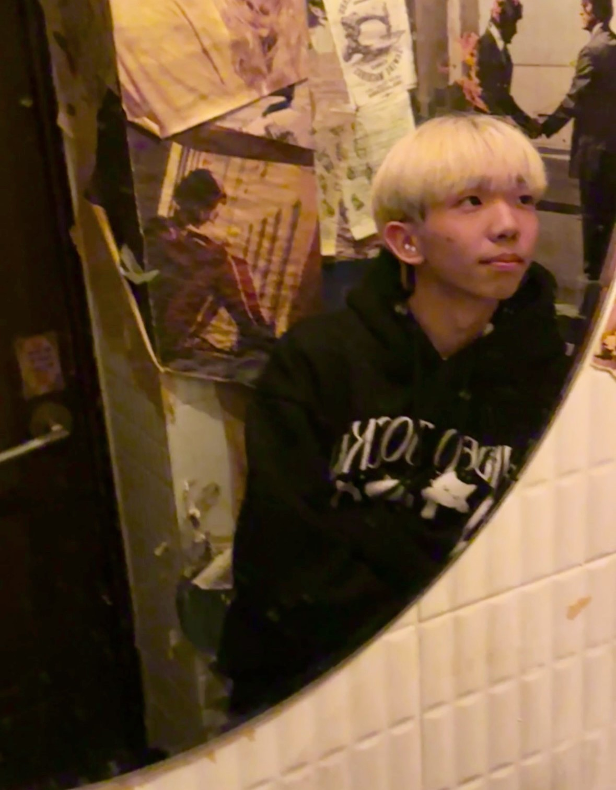

사용자 경험 중심의 직관적이고 완성도 높은 인터페이스를 구현합니다.
 📄 이력서 보기개요: 전공 동아리 '다솜'의 홈페이지 프로젝트로, 디자인, PM, 프론트엔드, 백엔드를 모두 맡았습니다. 주요 기능은 부원 모집, 면접 예약, 합격 발표, 공지사항 등을 포함한 웹사이트입니다.
기술: React, TypeScript, Tailwind CSS 등을 사용하였으며, Git/GitHub 컨벤션과 브랜치 전략을 설계하여 팀원들과 협업하였습니다.
성과: 풀스택 개발자로서 다양한 기술을 적용하며 협업 경험을 쌓을 수 있었습니다.
개요: MixMix는 외국인 유학생과 한국인을 연결해 언어 학습, 문화 교류, 네트워킹을 돕는 플랫폼입니다. 유저 간의 상호작용과 맞춤형 추천 시스템을 기반으로 사용자가 더 쉽게 소통할 수 있게 했습니다.
기술: ReactNative를 사용하여 실시간 채팅, 번역 API 연동 및 랭킹 기능등을 구현했으며, UI/UX 디자인에 중점을 두었습니다.
성과: 사용자 경험을 개선하기 위한 다양한 피드백을 반영하고, 실시간으로 커뮤니케이션을 할 수 있는 기능을 개발했습니다.
개요: 트래블랜은 여행지 추천과 예약 기능을 제공하는 웹 애플리케이션으로, 사용자가 원하는 여행지와 관련된 정보를 한 곳에서 쉽게 조회하고 예약할 수 있는 서비스를 제공합니다.
기술: JS를 기반으로 한 회원기능 연동을 처음으로 시도해봤고, 어떻게 동작하는지 이해했습니다.
성과: 사용자 경험을 중요시하는 UI/UX를 만드는 법을 배웠습니다.